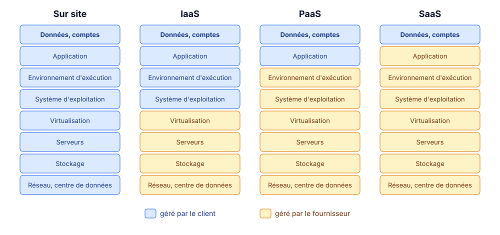

Le cloud : IaaS, PaaS, SaaS¶
Résumé
Le cloud (ou informatique en nuage) vend à la demande, par Internet, ce que les jours précédents ont fait construire à la main : des VM, des réseaux, du stockage, et même des applications toutes prêtes. Sans virtualisation, pas de cloud : chaque grand fournisseur fait tourner des millions de VM et de conteneurs sur ses hyperviseurs.
Cette partie donne la définition officielle du cloud, explique les trois modèles de service IaaS, PaaS et SaaS et le modèle de responsabilité partagée (qui s'occupe de quoi, entre le client et le fournisseur), puis présente les acteurs du marché mondial et européen, avec la question de la souveraineté des données. Le TP se fait sans créer de compte : classer des services, répartir les responsabilités, et estimer le coût d'une VM avec les calculatrices de prix publiques d'AWS, d'Azure et de Google Cloud.
| Propriété | Valeur |
|---|---|
| Difficulté | Débutant |
| Durée estimée | 2 h |
| Version décrite | Indépendant du logiciel ; chiffres du marché de novembre 2026 |
| Place dans le parcours | Partie 15 sur 17 du parcours Virtualisation — jour 5 |
| Dernière mise à jour | 2026-11-16 |
1. Qu'est-ce que le cloud ?¶
1.1 La définition du NIST¶
La définition de référence est celle du NIST, l'institut américain des normes (publication SP 800-145, 2011). Le cloud est un modèle qui donne accès, par le réseau, à un ensemble partagé de ressources informatiques configurables, qu'on peut obtenir et libérer rapidement, avec un minimum d'intervention du fournisseur. Il a cinq caractéristiques essentielles :
| Caractéristique | Ce que cela veut dire | Exemple |
|---|---|---|
| Libre-service à la demande | Le client obtient seul des ressources, sans appeler personne | Créer une VM en trois clics dans une console web |
| Accès réseau large | Les ressources sont accessibles par le réseau, depuis tout type d'appareil | Administrer ses serveurs depuis un navigateur ou une application |
| Mutualisation des ressources | Les ressources physiques du fournisseur sont partagées entre de nombreux clients | Des VM de clients différents sur les mêmes serveurs : c'est la virtualisation |
| Élasticité rapide | On augmente ou on réduit les ressources en quelques minutes, parfois automatiquement | Ajouter dix serveurs web pendant les soldes, les supprimer après |
| Service mesuré | La consommation est mesurée et facturée | Payer une VM à la seconde ou à l'heure |
Le NIST définit aussi quatre modèles de déploiement : le cloud public (ouvert à tous les clients), privé (pour une seule organisation, chez elle ou chez un hébergeur), communautaire (partagé par des organisations qui ont les mêmes besoins) et hybride (une combinaison, par exemple un cloud privé qui déborde sur un cloud public).
1.2 Trois modèles de service¶

Plus on monte de l'IaaS vers le SaaS, plus le fournisseur prend en charge de couches
| Modèle | Ce que le fournisseur fournit | Ce que le client gère | Exemples |
|---|---|---|---|
| IaaS (Infrastructure as a Service) | Des VM, du stockage et des réseaux virtuels | Le système d'exploitation, ses mises à jour, les logiciels, les données | Amazon EC2, Azure Virtual Machines, Google Compute Engine, OVHcloud Public Cloud |
| PaaS (Platform as a Service) | Une plateforme prête à exécuter du code : système, serveur web, base de données, mises à jour | Son application et ses données | Azure App Service, Google App Engine, AWS Elastic Beanstalk, Heroku |
| SaaS (Software as a Service) | Une application complète, prête à l'emploi | Ses données, ses utilisateurs et leurs droits | Microsoft 365, Gmail, Salesforce |
Une image pour s'en souvenir : la pizza
- Sur site : on fait la pâte, on achète les ingrédients, on cuit dans son four, on mange chez soi.
- IaaS : on loue une cuisine équipée ; on apporte ses ingrédients et sa recette.
- PaaS : on commande une pizza à emporter ; on fournit seulement la table et les boissons.
- SaaS : on mange au restaurant ; on choisit dans le menu, tout le reste est fait pour nous.
1.3 Le modèle de responsabilité partagée¶
Passer au cloud ne transfère pas toute la responsabilité au fournisseur. AWS résume la règle ainsi : le fournisseur est responsable de la sécurité du cloud (centres de données, matériel, hyperviseurs), le client de la sécurité dans le cloud (ce qu'il y installe et y stocke).
| Qui s'en occupe ? | Sur site | IaaS | PaaS | SaaS |
|---|---|---|---|---|
| Centre de données, matériel, réseau physique | Client | Fournisseur | Fournisseur | Fournisseur |
| Virtualisation (hyperviseurs) | Client | Fournisseur | Fournisseur | Fournisseur |
| Système d'exploitation et ses mises à jour | Client | Client | Fournisseur | Fournisseur |
| Applications | Client | Client | Client | Fournisseur |
| Données, comptes utilisateurs et droits d'accès, postes des utilisateurs | Client | Client | Client | Client |
Les données restent toujours la responsabilité du client
Quel que soit le modèle, Microsoft le rappelle : le client reste responsable de ses données, de ses comptes, de ses appareils et de la gestion des accès. Un mot de passe faible sur un compte Microsoft 365, une sauvegarde absente ou une VM IaaS jamais mise à jour sont des fautes du client, pas du fournisseur.
2. Les acteurs du cloud¶
2.1 Le marché mondial¶
Le marché mondial des services d'infrastructure cloud (IaaS, PaaS et cloud privé hébergé) est dominé par trois fournisseurs américains. Au troisième trimestre 2026, d'après le cabinet Synergy Research Group :
| Fournisseur | Part de marché (T3 2026) |
|---|---|
| Amazon Web Services (AWS) | 26 % |
| Microsoft (Azure) | 19 % |
| Google Cloud | 16 % |
Le marché a atteint 167,7 milliards de dollars sur ce seul trimestre, en hausse de 55 % sur un an, tiré en grande partie par les services d'intelligence artificielle.
2.2 Les acteurs français et européens, et la souveraineté¶
Les données confiées à un fournisseur américain restent soumises au droit américain, même stockées en Europe : le CLOUD Act (2018) permet aux autorités des États-Unis d'exiger d'une entreprise américaine les données qu'elle héberge, où qu'elles soient. Pour les données sensibles, l'État français a créé une qualification exigeante, délivrée par l'ANSSI : SecNumCloud (référentiel en version 3.2). Elle impose notamment que le fournisseur et ses données échappent aux lois non européennes.
Quelques acteurs à connaître :
- OVHcloud (Roubaix) : le premier fournisseur européen, avec des offres qualifiées SecNumCloud ;
- Scaleway (groupe Iliad), Outscale (Dassault Systèmes), Orange (Cloud Avenue), Cloud Temple ;
- des offres « de confiance » construites avec des technologies américaines, mais exploitées par des sociétés françaises : S3NS (Thales avec Google Cloud), qualifiée SecNumCloud fin 2025, et Bleu (Orange et Capgemini avec Microsoft), dont la qualification est en cours.
Toujours vérifier la liste officielle
Les qualifications SecNumCloud sont délivrées, renouvelées ou retirées par l'ANSSI. Avant de recommander une offre, consulter la liste officielle des prestataires qualifiés sur le site de l'ANSSI.
3. TP sans compte¶
3.1 ✍️ Exercice : classer les services¶
Classer chaque service en IaaS, PaaS ou SaaS :
- Une VM Debian louée chez OVHcloud, sur laquelle on installe nginx soi-même.
- Microsoft Teams.
- Azure App Service, où l'on dépose le code d'un site web en PHP.
- Amazon EC2.
- Google Workspace (Gmail, Drive, Docs).
- Une base de données gérée (Azure SQL Database, Amazon RDS) : on crée des tables, le fournisseur gère le serveur et les mises à jour.
- Un espace de stockage en ligne pour particuliers, comme Dropbox.
- Un serveur Proxmox VE installé dans la salle machine de l'entreprise.
Corrigé
- IaaS : on loue une VM et on gère le système.
- SaaS : une application prête à l'emploi.
- PaaS : on fournit seulement le code, la plateforme est gérée.
- IaaS : des VM à la demande.
- SaaS.
- PaaS : une plateforme de base de données gérée (on parle aussi de DBaaS).
- SaaS.
- Ni l'un ni l'autre : c'est de la virtualisation sur site. Si l'entreprise y ajoute le libre-service, l'élasticité et la mesure de la consommation pour ses services internes, on parle de cloud privé.
3.2 ✍️ Exercice : qui est responsable ?¶
Pour chaque incident, dire qui est responsable (client ou fournisseur), et ce qu'il aurait fallu faire.
- Une VM IaaS Windows Server est infectée par un rançongiciel qui exploitait une faille corrigée depuis six mois.
- Un incendie détruit une salle du centre de données du fournisseur.
- Un salarié supprime par erreur un dossier partagé dans Microsoft 365, et l'entreprise n'a aucune sauvegarde.
- Le compte administrateur Azure de l'entreprise, protégé par un mot de passe simple, est piraté.
Corrigé
- Client : en IaaS, les mises à jour du système de la VM sont à sa charge. Il fallait appliquer les correctifs (et surveiller les avis de sécurité).
- Fournisseur pour le centre de données ; mais le client est responsable de la continuité de ses services : répartir ses VM sur plusieurs zones ou régions, et garder des sauvegardes ailleurs.
- Client : les données restent sa responsabilité, même en SaaS. Il fallait une politique de rétention et une sauvegarde externe des données Microsoft 365 (règle 3-2-1).
- Client : les comptes et les accès lui reviennent toujours. Il fallait une authentification multifacteur et un mot de passe robuste.
3.3 TP : estimer le coût d'une VM avec les calculatrices¶
Les trois grands fournisseurs publient une calculatrice de prix utilisable sans compte. Objectif : estimer le coût mensuel d'une VM Linux de 2 vCPU et 4 Go de mémoire, avec un disque de 30 Go, allumée en permanence (730 heures par mois), dans une région française quand elle existe.
| Fournisseur | Calculatrice | Région à choisir |
|---|---|---|
| AWS | calculator.aws : Create estimate, service Amazon EC2 | Europe (Paris) |
| Microsoft Azure | Calculatrice de prix Azure : produit Machines virtuelles | France Central |
| Google Cloud | Calculatrice Google Cloud : Compute Engine | europe-west9 (Paris) |
Pour chacun, noter dans un tableau : le nom du type de VM retenu, le prix mensuel, puis le prix si la VM n'est allumée que 10 heures par jour, 22 jours par mois (220 heures).
Chez OVHcloud, il n'y a pas de calculatrice publique, mais la grille tarifaire Public Cloud est consultable sans compte : y relever le prix horaire ou mensuel d'une instance de taille proche.
Ce qu'il faut retenir (les prix exacts changent souvent)
- Les prix varient d'un fournisseur à l'autre, d'une région à l'autre et d'un mois à l'autre : c'est pourquoi on n'en donne pas ici. L'important est la méthode.
- Une VM éteinte la nuit et le week-end coûte environ trois fois moins (220 heures au lieu de 730) : en IaaS, éteindre ce qui ne sert pas est la première économie. Attention : le disque reste facturé même VM éteinte.
- Les calculatrices proposent des réductions contre un engagement d'un ou trois ans (instances réservées, plans d'économies) : intéressant pour un serveur qui tourne en permanence.
- Comparer avec l'exercice de la partie 1 : un serveur physique coûte cher à l'achat mais peu chaque mois ; le cloud ne coûte rien à l'achat mais se paie tous les mois. Le bon choix dépend de la durée d'utilisation et de la variabilité de la charge.
3.4 💬 Débat : le cloud ou la virtualisation sur site ?¶
Par deux, 15 minutes. L'un défend le cloud public, l'autre la virtualisation sur site (comme le Proxmox du jour 3), pour l'entreprise Bureautix (40 salariés). Chacun expose cinq arguments distincts. Seul : écrire cinq arguments pour chaque camp.
Éléments de réponse
- Cloud : pas d'investissement de départ ; élasticité ; haute disponibilité et sauvegardes plus faciles à mettre en place ; accès depuis partout ; le fournisseur gère le matériel, l'énergie, la sécurité physique ; PCA et PRA à moindre coût.
- Sur site : maîtrise totale et données chez soi (souveraineté) ; coût prévisible et souvent plus bas sur plusieurs années pour une charge stable ; pas de dépendance à la connexion Internet ; pas de risque de hausse de prix imposée ; compétences internes conservées.
- Conclusion fréquente : un modèle hybride (services standards en SaaS, comme la messagerie ; serveurs métier sur site ou en IaaS souverain), choisi service par service.
4. Questions de révision¶
- Citer les cinq caractéristiques essentielles du cloud selon le NIST.
- Quelle est la différence entre IaaS, PaaS et SaaS ? Donner un exemple de chacun.
- En IaaS, qui applique les mises à jour du système d'exploitation de la VM ?
- Quelle responsabilité reste toujours au client, quel que soit le modèle ?
- Qu'est-ce que le CLOUD Act, et pourquoi a-t-on créé la qualification SecNumCloud ?
- Quel lien y a-t-il entre la virtualisation et le cloud ?
Corrigé
- Libre-service à la demande, accès réseau large, mutualisation des ressources, élasticité rapide, service mesuré.
- L'IaaS fournit l'infrastructure (VM, stockage, réseau) : le client gère le système et au-dessus (Amazon EC2). Le PaaS fournit une plateforme d'exécution : le client fournit son code (Azure App Service). Le SaaS fournit une application prête à l'emploi (Microsoft 365).
- Le client.
- Ses données, ses comptes et les droits d'accès (et ses appareils).
- Une loi américaine de 2018 qui permet aux autorités des États-Unis d'exiger d'une entreprise américaine les données qu'elle héberge, même hors des États-Unis. SecNumCloud, délivrée par l'ANSSI, qualifie des offres cloud dont le fournisseur et les données échappent aux lois non européennes, pour les données sensibles.
- Le cloud repose sur la virtualisation : la mutualisation des ressources et l'élasticité sont possibles parce que les serveurs, le stockage et les réseaux des fournisseurs sont virtualisés. Une VM IaaS est une VM comme celles du parcours, sur l'hyperviseur du fournisseur.
Ressources¶
- NIST SP 800-145 — The NIST Definition of Cloud Computing — la définition de référence (en anglais).
- Microsoft — Responsabilité partagée dans le cloud — la matrice détaillée sur site, IaaS, PaaS, SaaS.
- AWS — Modèle de responsabilité partagée — « la sécurité du cloud » et « la sécurité dans le cloud ».
- ANSSI — Produits et services qualifiés — la liste officielle des offres SecNumCloud.
- Partie précédente : Virtualiser les applications et les postes de travail · Partie suivante : Tendances et métier.